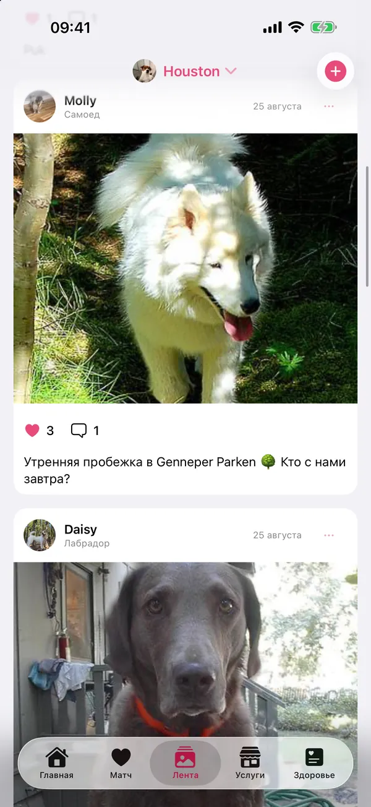
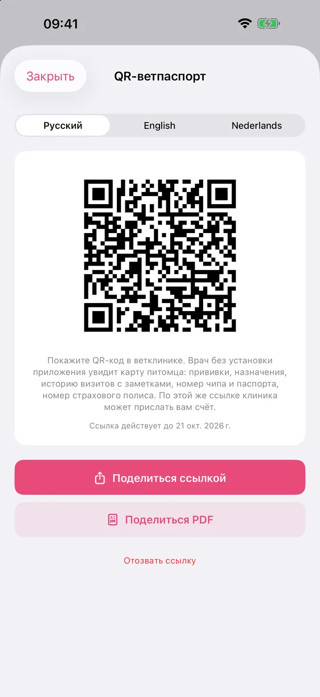

Матч
Друзья для игр или пара для собаки или кошки рядом с вами. Фильтр по породе и расстоянию, а когда симпатия взаимна, можно написать владельцу.
Находите друзей и пару для питомца рядом, храните прививки и визиты к ветеринару в одном месте и показывайте ветпаспорт одним QR‑кодом. PaWow сделан для владельцев собак и кошек в Нидерландах.
Скоро в App Store · сейчас бета в TestFlight


От первого знакомства в парке до ежегодного осмотра: всё о питомце в одном месте.
Друзья для игр или пара для собаки или кошки рядом с вами. Фильтр по породе и расстоянию, а когда симпатия взаимна, можно написать владельцу.
Прививки, препараты и визиты к ветеринару в одном месте, с напоминаниями на телефоне.
Ветеринар сканирует QR‑код и сразу видит прививки, номер чипа и прошлые визиты. По той же ссылке клиника может прислать счёт.
Смотрите, какие собаки гуляют рядом прямо сейчас, и присоединяйтесь. Своё место вы показываете, только когда сами начинаете прогулку.
Делитесь фото питомца и смотрите, что публикуют другие. Понравился профиль? Поставьте лайк прямо из ленты.
Ветклиники, груминг-салоны и зоомагазины поблизости, на карте.
Корм, игрушки и средства ухода из интернет-магазинов bol и Zooplus с учётом вида питомца. Заказ как обычно, на сайте магазина.
Животные из приютов поблизости, которые ищут дом.
Настоящие экраны из бета-версии, а не иллюстрации.




Прививки, препараты, номер чипа и визиты к ветеринару: в PaWow всё в одном месте, даже если бумажный паспорт остался дома в ящике стола.
В каталоге собраны корм, игрушки, аксессуары и средства ухода из интернет-магазинов bol и Zooplus, с учётом того, какой у вас питомец.
Кличка, вид, порода, дата рождения и фото. Несколько питомцев? Переключение одним касанием.
Добавьте прививки и визиты, и PaWow напомнит, когда подойдёт срок.
Матчи, компания для прогулок, ветклиники и груминг-салоны рядом.
Практичные статьи, которые мы пишем сами: первые недели со щенком, поездки с питомцем и правила выгула.
Что купить до приезда щенка и что оформить в первые недели: от клетки-домика до регистрации чипа.
Читать →Чип, прививка от бешенства и ветпаспорт: что нужно, за сколько начинать и какие страны требуют больше.
Читать →Где собаке можно без поводка? Правила зависят от муниципалитета. Главное из них и советы для жары и тёмных вечеров.
Читать →PaWow зарабатывает на партнёрских ссылках, а не на ваших данных. Как это устроено:
Мы храним только то, что нужно для работы приложения, а управляете ими вы.
Полная политика конфиденциальности →Сейчас мы тестируем приложение в TestFlight с небольшой группой владельцев. Как только PaWow выйдет в App Store, ссылка появится на этой странице.
Пока нет: PaWow сейчас только для iPhone.
На нидерландском, английском и русском.
Для собак, кошек, птиц, кроликов и других питомцев. Совместные прогулки есть только для собак.
Кличку, породу и фото питомца видят другие пользователи: в подборе пар, в ленте и на карте прогулок. Медицинские записи, документы и переписку видите только вы и тот, с кем вы переписываетесь или кому отправили QR‑ссылку.
Нет. Каталог ведёт в интернет-магазины, заказ и оплата там. Подробнее: как работают партнёрские ссылки.
Мы делаем PaWow, независимое приложение для владельцев питомцев в Нидерландах, шаг за шагом и вместе с первыми пользователями. Любой отзыв помогает.
Вы ветклиника, груминг-салон или приют и хотите появиться в PaWow? Напишите нам.